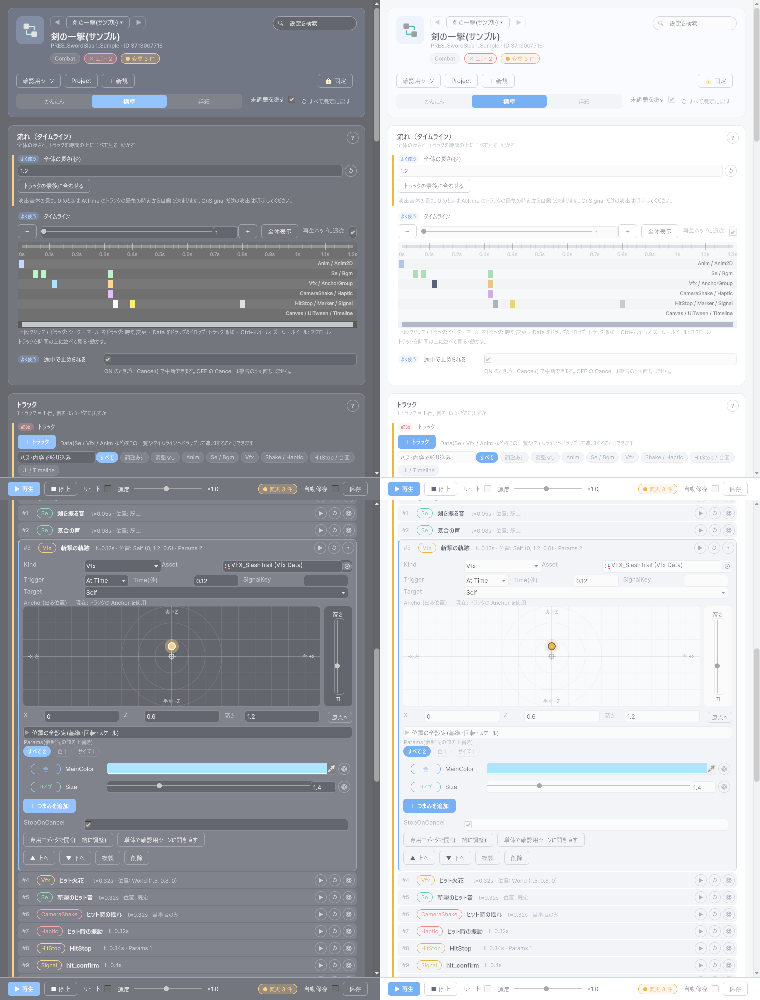

最終更新日: 2026-10-13
「剣攻撃」のように、アニメ・効果音・エフェクト・カメラ揺れ・振動・画面停止（ヒットストップ）などを 1 つにまとめたものが「演出（PresentationData）」です。プログラマーは Presentation.Play(演出のID, ...) と 1 行書くだけで、中身（何を・いつ・どう鳴らすか）はすべてこのデータで決まります。あとから演出の中身を差し替えても、プログラムの修正は不要です。
Tools > D-Drive > Editors > Presentation Editor でトラックをタイムラインと 1 トラック 1 行の一覧で編集し、実際にアニメ・SE・エフェクト・画面揺れ・振動を同時に再生して確認しながら作れます。使い方は下の「Presentation Editor の使い方」を参照してください。
対象のデータを選んでいない（空の）ときは、ウィンドウの「サンプルを作る」ボタンでサンプルのデータを作って試せます（Assets/GameData/<種別>/Sample/ にカテゴリ Sample で作られます。同じものが既にあれば、作らずそれを選びます）。
演出は「トラック」という短い指示の集まりでできています。1 本のトラックは「いつ」「何を」の 2 つを決めます。
| 項目 | 説明 | ||||||||
|---|---|---|---|---|---|---|---|---|---|
| Trigger（いつ） | At Time: 再生開始から何秒後に鳴らすか(Time 欄に秒数)。0 秒は「開始と同時」。 On Signal: プログラム側が「合図（例: 攻撃が当たった）」を送ってきたら鳴らす。Signal Key 欄に合図の名前(例: hit)を入れる。 | ||||||||
| Kind（何を） | 下記「トラックの種類」参照。 | ||||||||
| Asset（何のデータを） | Kind に応じた ID(例: Kind=Vfx なら VfxData の ID)。Marker/Signal/HitStop は不要。 | ||||||||
| Target（基準になる場所） | Self: 演出を出した本人(例: 攻撃した本人)。Context Target: 相手(例: 攻撃を受けた敵)。World / Anchor: 場所を固定したい据え置きの演出向け(下の Anchor 欄の位置をそのまま使う)。 | ||||||||
| Anchor | VFX・SE を出す細かい位置(ボーン名や右手・足元など)。Anchor のページと同じ形式。この欄はエフェクト・効果音側のデータ(VfxData/SeData)が持つ Anchor と組み合わさって、次の 3 通りのどれかで実際に出す位置が決まります。
| ||||||||
| Params | Kind ごとの追加パラメータ(例: Kind=HitStop なら「何秒止めるか」を 1 つ目に入れる)。Kind=Vfx のときは、そのエフェクト側(VfxData の Params)と同じ並び順(ラベル名の順番=インデックス)の値を上書きします(色を差し替える、など)。Kind=Se の音量上書きにはまだ対応していません(値を入れても音量には反映されません)。他の Kind では今のところ使われません。 | ||||||||
| Stop On Cancel | 途中で演出が中断された(Cancel された)とき、このトラックで出した物(VFX・SE 等)も一緒に止めるか。オフなら鳴らし切る。 | ||||||||
| Scope | Kind が HitStop / CameraShake / Haptic のときだけ使います。 Everyone(既定): 通信対戦で相手の画面にもそのまま届き、全員が発火します。Participants Only: 通信対戦で当事者(攻撃した本人・当たった相手)以外には届かず、関係のないプレイヤーの画面停止・画面揺れ・振動は起きません。詳しくは下の「通信対戦（オンライン対戦）での演出」を参照してください。 |
| Kind | 内容 | 今の対応状況 |
|---|---|---|
| Anim / Anim2D | アニメーションを再生する | 対応済み |
| Se / Bgm | 効果音 / BGM を鳴らす | 対応済み |
| Vfx | エフェクトを出す | 対応済み |
| Canvas | UI 画面(ポップアップ等)を開く | 対応済み |
| UiTween | UI の動き(UI Tween)を再生する | 対応済み |
| HitStop | 一瞬だけゲーム全体の時間を止める(「ヒットストップ」演出)。Params の 1 つ目に止める秒数を入れる | 対応済み |
| Marker | プログラム側に「ここまで来た」を知らせるだけの目印(見た目には何も起きない)。Signal Key 欄が目印の名前になる | 対応済み |
| Signal | プログラム側の処理を直接呼び出すための合図(Marker と似ているが、コード側の受け取り方が違う)。Signal Key 欄が合図の名前になる | 対応済み |
| CameraShake | 画面を揺らす。Asset 欄にカメラシェイクのデータの ID を入れる | 対応済み |
| Haptic | コントローラーを振動させる。Asset 欄に振動データの ID を入れる | 対応済み |
| Timeline | Unity Timeline を再生する(カットシーン向け) | 未対応(近日実装予定) |
| AnchorGroup | 配置セットを出す。Asset 欄に配置セットの ID を入れると、そのセットが持つ全点に一括で VFX / 効果音が出ます | 対応済み |
| 項目 | 説明 |
|---|---|
| Total Duration | 演出全体の長さ(秒)。0 のままにすると、At Time トラックの一番遅い時刻から自動で決まります。「On Signal のトラックだけ」で組んだ演出は、この自動計算だと 0 秒扱いになりすぐ終わってしまうため、必ず秒数を入れてください。0 のままにしている間はタイムライン右上に小さく「⚠ 尺が未設定です」と出ます。「流れ」カードの「トラックの最後に合わせる」ボタンを押すと、各トラックの終わりの時刻(アニメ・効果音は長さも考慮)に合わせて自動で数値を入れてくれます。 |
| Interruptible | 途中で中断(Cancel)できるか。オフにすると、プログラム側が止めようとしても無視されます(最後まで再生し切る前提の演出向け)。 |
Presentation Editor は、演出データを組み立てて、アニメ・SE・エフェクト・カメラ揺れ・振動を実際に同時に再生して確認するためのウィンドウです。設定は「やりたいこと」ごとのカードに分かれていて、トラックが何十本あっても、1 トラック = 1 行の一覧で見渡せます。
Tools > D-Drive > Editors > Presentation Editor、または演出データの Inspector の一番上にある「Presentation Editor で開く」、または Asset Browser でダブルクリック
| 部品 | 説明 |
|---|---|
| ◀ ▶ と名前のボタン | 同じカテゴリの演出データを順に切り替えます。名前のボタンで最近使ったものも選べます。 |
| 設定を検索 | 欄の名前・説明・検索語に加えて、トラックのアセット名・Kind・Signal 名にも一致する設定だけを出します（例: Vfx / hit / 位置）。 |
| 検証・変更のチップ | 検証のエラー・警告数と、まだ保存していない変更の数。検証の結果は該当する欄の下に出ます（トラックの問題は、その行の先頭の ⚠ にも印が付きます）。「修正」ボタンが付いたものは押すだけで直せます。 |
| 確認用シーン | ライト・カメラ・Volume・床を備えた確認用シーンを開き（無ければ作ります）、「確認する」カードで選んだモデルを配置します。統合プレビューはここで行います。右クリックで「このシーンに配置」「このシーンに本配置」も選べます。 |
| Project / ＋ 新規 / 固定 | Project でハイライト / 新しい演出データを作る / 固定を ON にすると Project の選択が変わっても対象が切り替わりません。 |
| かんたん / 標準 / 詳細 | 見せる欄の量。かんたん=必須の欄（トラックの一覧）だけ / 標準=よく使う欄まで（タイムライン・長さ・Signal・確認用のモデル・SceneView 表示・ログ）/ 詳細=すべて（PredictLocal・Flags・イベント・環境）。 |
| 未調整を隠す | 詳細モードで、既定値のままの設定をカードごとの「未調整の設定」に折りたたみます。 |
| ↺ すべて既定に戻す | 既定値と違う設定を既定に戻します（確認あり。管理情報とトラックの一覧は対象外）。各欄の右の ↺ でその欄だけ戻せます。 |
| ▶ 再生 / ■ 停止 / リピート / 速度（下部の固定バー） | 確認用シーンで、実際のゲームと同じ仕組み（PresentationManager）で演出を再生します。再生中の ▶ は「やり直し」（最初から）になります。リピートは完了後に自動でもう一度再生します。速度は 0.1x〜2x のスロー再生で、×1.0 の位置に吸着します。 |
| 変更 N 件 / 自動保存 / 保存 | まだ保存していない変更の数。「保存」でアセットに書き込みます（保存のたびに版数が進みます）。ウィンドウを閉じる・対象を切り替えるときに未保存なら確認します（自動保存が ON なら聞かずに保存）。 |
Ctrl+Z / Ctrl+Y で戻せます。
| 部品 | 説明 |
|---|---|
| 全体の長さ（秒） | 上の「共通項目」の Total Duration です。0 のままでトラックが OnSignal だけのときは、欄の下に注意が出ます。「トラックの最後に合わせる」を押すと、各トラックの終わりの時刻（アニメ・効果音は長さも考慮）に合わせて自動で数値が入ります。 |
| タイムライン | トラックを Kind ごとの 6 本のレーン（Anim / Se・Bgm / Vfx・AnchorGroup / CameraShake・Haptic / HitStop・Marker・Signal / Canvas・UiTween・Timeline）に色つきのマーカーで並べます（At Time のトラックだけ。On Signal のトラックは時刻を持たないので出ません）。 |
| マーカー | クリックすると下の一覧でそのトラックが開きます。左右にドラッグすると時刻が変わります（1 回の操作が 1 回の Ctrl+Z で戻せます）。 |
| 上段（目盛りの帯） | クリック、またはドラッグすると、その時刻へシークします（再生中・一時停止中。通過したトラックはまとめて発火します。巻き戻すと発火済みのトラックは再発火しません。ログに 1 回だけ注意書きが出ます）。 |
| 再生ヘッド | 再生中は、レーンを縦に貫く線が今の位置を示し、左上に「現在時刻（秒）」と「フレーム数」が出ます。 |
| Data のドラッグ&ドロップ | Project や Asset Browser から SE・VFX・アニメ・配置セット等をタイムラインに落とすと、種類に応じたレーンにトラックが追加されます。時刻は落とした位置です。 |
| － / ズームスライダー / ＋ / 全体表示 | 拡大縮小します。Ctrl（Mac は Cmd）+ホイールでカーソルの位置を中心にズーム、ホイールだけ、または下の横スクロールバー（ミニマップ）のドラッグで左右に移動します。目盛りは拡大に応じて 1 秒 / 0.5 秒 / 0.1 秒 / 1 フレームへ自動で切り替わります。「全体表示」で元に戻ります（対象を切り替えたときも全体表示に戻ります）。 |
| 再生ヘッドに追従 | ON（既定）にすると、拡大していても再生ヘッドが画面外に出ないよう表示範囲が自動でスクロールします。 |
| 途中で止められる（Interruptible） | OFF にすると、プログラム側が止めようとしても無視されます。 |
| PredictLocal / Flags | 通信対戦向けの設定です（下の「通信対戦での演出」）。詳細モードで出ます。 |
演出の中身の一覧です。1 トラック = 1 行で、行の読み方は次のとおりです。
| 部品 | 説明 |
|---|---|
| # 番号 / Kind のチップ / アセット名 | トラックの番号、種類（色はタイムラインのレーンと同じ系統）、参照先の名前（Asset が空なら「(Asset 未設定)」、Marker / Signal は名前）。名前をクリックするとそのトラックを選びます（タイムラインのマーカー・SceneView の点の選択と共通です）。 |
| 1 行の要約 | 「t=0.12s · 位置: Self (0, 1.2, 0.6) · Params 2」のように、いつ（時刻 / onSignal:キー）・どこに（Vfx / Se / AnchorGroup の位置）・Params の数・Scope が 1 行で分かります。 |
| ▶（単体試聴） | そのトラックだけを時刻 0 で再生します（確認用シーンのモデルを基準に、実際の Manager で再生。ほかのトラックは鳴りません）。On Signal のトラックも、その場で鳴らして確かめられます。 |
| ↺ | そのトラックの時刻・位置・Params・Scope を既定に戻します（Kind と Asset は残します）。Ctrl+Z で戻せます。 |
| ⚙ | そのトラックの詳細を開きます（その行だけ展開されます）。 |
| ⚠ | 検証の問題があるトラック（Asset 未設定・SignalKey が空など）。マウスを合わせると内容が出ます。 |
一覧の上に、検索（アセット名・Kind・要約）・「調整あり / 調整なし」・Kind のチップの絞り込みと、「13 トラック中 調整あり 4」のような件数が出ます（「調整あり」= 位置・Target・Params・Scope に手を入れたトラック）。20 行を超えると一覧の中でスクロールします。
| 項目 | 説明 |
|---|---|
| Kind / Asset | 種類と参照先。Kind を変えると Asset は空に戻ります（別の種類のデータが残らないようにするためです。もう一度 Asset を選んでください）。 |
| Trigger / Time / SignalKey / Target | 上の表のとおりです（いつ・誰を基準に出すか）。 |
| Anchor（出る位置） | Vfx / Se のトラックは、上から見たパッドをドラッグして位置（X / Z）、右のスライダーで高さを決めます（数値でも入力できます）。パッドの上に、アセット側の Anchor との関係（上の Anchor の表の 3 つの状況のうち今どれか）が 1 行で出ます。その下の「位置の全設定（基準・回転・スケール）」で空間・Path・向き・スケール・追従を細かく指定できます（Anchor を持たない Kind では、この欄だけが出ます）。 |
| Params（調整つまみ） | 上書きする値を、分類（色・サイズ・速度…）つきのつまみで回します。Vfx のトラックは、参照先 VFX の Params と同じ並びで対応し、つまみの名前にそのラベルが出ます（参照先に Params が無いときは「反映されません」と出ます）。「＋ つまみを追加」で数値・整数・色を足し、⚙ で型や値を直接編集・削除できます。 |
| Scope | HitStop / CameraShake / Haptic のトラックだけに出ます（上の表のとおり）。 |
| StopOnCancel | 演出が中断されたとき、このトラックで出した物も一緒に止めるか。 |
| 専用エディタで開く（一緒に調整） | 今の確認用シーン・配置したモデル・再生状態をそのまま維持して、その Data の専用エディタを開きます。Vfx は VFX Editor の「スポーン先」に、ここで配置したモデル（Self）が自動で入ります。専用エディタ側で調整した内容は、次の「▶ 再生」から反映されます。 |
| 単体で確認用シーンに開き直す | 専用エディタのいつもの流れ（その Data 単体の確認用シーン）で開きます。こちらを選ぶと統合プレビューは片付きます。 |
| ▲ 上へ / ▼ 下へ / 複製 / 削除 | 一覧の並び替え（再生には影響しません）・直後に複製・削除。Ctrl+Z で戻せます。 |
| 部品 | 説明 |
|---|---|
| Signal: ○○ ボタン | Trigger=On Signal のトラックの Signal Key ごとにボタンが並びます。まず固定バーの「▶ 再生」で演出を再生し、再生中にボタンを押すと、コード側から「当たった」等の合図が来たのと同じ動きを試せます（ログに「手動送出: Signal("hit")」と出ます）。停止中はボタンが押せません（合図を受け取る演出が動いていないためです）。On Signal のトラックが無いときは案内が出ます。 |
| データ→コードの通知 | Signal / Marker トラックの名前と時刻の一覧です（再生するとログに出ます）。 |
| きっかけで鳴らす・出す（イベント） | 演出の節目で別の SE / VFX を一緒に鳴らします（詳細モード）。 |
| 部品 | 説明 |
|---|---|
| 確認用のモデル / 配置 / 配置解除 | ModelData を選んで「配置」を押すと、確認用シーンの原点にモデルが出ます（Animator が無いモデルでも VFX / SE / 揺れ / 振動の基準点になります。未保存で、ウィンドウを閉じると片付きます）。Self を基準にするトラックは、このモデルを基準にします（モデル未配置だと Self 基準のトラックは対象が見つからず、警告のうえ何も起きません）。 |
| ⏸ 一時停止 / ⏮ 最初から / 状態 | 再生中の一時停止と再開（ボタンの表示が「▶ 再開」に変わります）、最初からのやり直し、いまの再生位置（「⏸ 一時停止中 42% (1.26s)」など）。 |
| SceneView に位置を出す | Vfx・Se トラックの「出る位置」を SceneView に色つきの点で表示します（Vfx=マゼンタ、Se=シアン、AnchorGroup=黄緑）。「表示対象」を「すべて」にすると位置を持つ全トラックが、「選択中のみ」にすると一覧で選んだ 1 本だけが出ます。点をクリックするとそのトラックが一覧で選ばれます（展開・スクロール）。他のウィンドウを触っていて薄く表示されているときも、点をクリックすればこのウィンドウに切り替わります。移動・回転ハンドルは、選んだトラックの最終的な出る位置に出ます。エフェクト・効果音側だけに Anchor があるときにハンドルを動かすと、その最終位置になるようにトラック側の Anchor が自動で設定され、両方に設定した状況に切り替わります（アセット側のデータ自体は変わりません）。両方に設定されているときも掴む点は最終位置で、動かすとトラックの Anchor が計算し直されます。ハンドルで動かした結果は、次の「▶ 再生」から反映されます。AnchorGroup トラックは全点を番号付きで表示しますが、編集はできません（Anchor Group Editor を開いて調整してください）。Anchor を持たない Kind（Anim・CameraShake・Haptic など）は表示されません。 |
| ログ | 再生で起きたこと（Marker・トラックの発火・Signal・完了・中断・配置など）の最近 16 行。「ログを消す」で空にできます。 |
| 環境（ライト・背景） | 確認用シーンのライトの強さ・カメラの背景色を調整します（今開いているシーンの見た目を変えるだけです）。詳細モード。 |
一覧に出る名前・カテゴリ・説明・タグ・アイコン・担当者・仕様書の URL・変更メモです（詳細モードで全部出ます）。Id・版数・最終更新者・最終更新日時は読み取り専用です。
Assets/GameData/PreviewScenes/PresentationSkillSlashPreviewScene.unity を開いて Play すると、剣攻撃の演出(アニメ相当の代わりに VFX+SE を Self に配置、当たった合図で画面停止+SE+画面揺れ+振動)が自動で再生されます。P キーでもう一度再生、Space キーで「当たった」合図(Signal)、C キーで中断(Cancel)を試せます。
演出データの Flags > Net を Cosmetic(「見た目だけで勝敗には影響しない」の意味)にしておくと、通信対戦時にプログラム側の特別な配線なしで自分が再生した演出が相手の画面にも自動で配られ、同じタイミングで再生されます。既定値は Local(自分の画面だけ)なので、相手にも見せたい演出は Flags.Net を Cosmetic に変える必要があります(通常の攻撃演出などは Cosmetic にしておくのが基本です)。
| 警告 | 意味と直し方 |
|---|---|
| トラック N(Kind)の Asset が未設定です | そのトラックが使う ID(VfxData など)を設定してください。Marker/Signal/HitStop は対象外です。 |
| SignalKey が空です | On Signal トラック、または Marker/Signal の名前欄が空です。半角英数字などで名前を入れてください。 |
| Time が Total Duration を超過しています | そのトラックが鳴る前に演出全体が終わってしまいます。Total Duration を伸ばすか、Time を短くしてください。 |
| Interruptible=false ですが尺が長すぎます | 10 秒を超える演出を「中断不可」にすると、プレイヤーを長時間拘束してしまいます。本当に中断不可でよいか見直してください。 |
| トラック N(AnchorGroup)の Asset の種別が AnchorGroup ではありません | Asset 欄に配置セット以外のデータ(VfxData など)が入っています。配置セットのデータを選び直してください。 |
| トラックとアセット側の両方に Anchor が設定されているため、親子合成されます | 警告ではなくお知らせです。トラックの Anchor とエフェクト・効果音側の Anchor を両方設定すると、上の Anchor 欄の説明どおり自動で組み合わさります。意図した組み合わせなら無視してかまいません。 |